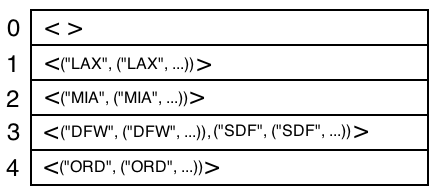

Map - Hashing Implementation Layered on Queue and StaticArray |
A hashing implementation where Map is layered on StaticArray and Queue works as follows:
- Map's representation has two data members:
- map: an array of Queues, indexed from 0..(arraySize - 1), e.g., if arraySize = 10, the array is indexed from 0..9
- mapSize: an Integer holding a number representing the count of the (key, value) mappings currently stored in the
map
- The items stored in the Queues are (key, value) record that forms the mapping from the key to the value
- When defining a new mapping:
- The add operation first uses the hash function applied to the key to determine which
bucket (i.e., array location) to store the mapping record
- Then add adds the new (key, value)
record to the Queue found in the bucket
- When removing an existing mapping:
- The client program calls the remove operation and provides a key (k)
as a parameter to the remove operation
- The remove operation hashes on k to determine which bucket to search
- The remove operation then searches for the mapping in the Queue, by
comparing the k with the keys found in the (key, value)
records stored in the Queue
- The remove operation removes a MapPairRecord record 'r' which is a (key, value) pair from the
Queue where
areEqual(r.keyItem, k).
Example:
- An example named instance of Map might be typedef'ed and a variable mAir is declared
as follows:
typedef Map<Text, AirportRecord, KeyComparer> AirportMap;
AirportMap mAir;
- The Key is type Text, and is a three letter airport code, e.g., SDF for
Louisville International Airport.
- The Value is type AirportRecord and contains 13 fields for each piece of airport data
- The KeyComparer class (the 3rd template parameter) contains three callback operations:
- areEqual - compares for equality to values of type Key
- areOrdered - compares ≤ between two values of type Key
- hashCode - returns an Integer value that uniquely represents a value of type Key
Abstract Value of Airportmap
Variable AirportMap mAir has the following value after many mappings have been
added
- Recall: Map is modeled as a mathematical set of (key, value) ordered pairs, therefore we use { } to denote the value of a Map
mAir = {("SDF",("SDF","Louisville International","Louisville", ...)),
("ORD",("ORD","O'Hare International","Chicago", ...)),
("MIA",("MIA","Miami International","Miami",
...)),
("DFW",("DFW","Dallas Ft. Worth International","DFW Airport",
...)),
..
("LAX",("LAX","Los Angeles International","Los
Angeles", ...))}
Concrete Value of AirportMap Using Hashing
Assume hashCode callback operation supplied by the client programmer has the following definition:
Integer hashCode(Text& x)
{
return x[0] % arraySize;
} // hashCode
Notes about hashCode:
- Takes a Text as a parameter because the Key field for AirportMap is a Text, i.e., values such as "SDF", "ORD", "CDG", etc. Go look at the typedef statement (above) to see that the Key field is type Text in this example.
- It uses Text's operator[ ] to access the first character of the Text parameter x
- It uses the mod operator to mod the ascii value of the first character with the array size. This produces a value in the range of [0..(arraySize - 1)]
- It returns the value to the caller.
- For example, suppose the following:
- x = "SDF"
- x[0] access the 'S' character
- 'S' in ascii is 83
- suppose arraySize = 5
- 83 % 5 = 3
Below is what the array of Queues (with arraySize = 5) would look like for the Map variable mAir (shown above)

Map Correspondence with the StaticArray of Queues
Recall the representation for Map when implemented using hashing and an array of Queues:
Map's representation has two data members:
- map: an array of Queues, indexed from 0..(arraySize - 1), e.g., if arraySize = 10, the array is indexed from 0..9
- mapSize: an Integer holding a number representing the count of the (key, value) mappings currently stored in the
map
The correspondence function must Union all the two-tuples found in all of the Queues in each location of the array in order to come up with the value for self (i.e., the Map)
self = IteratedUnion (b:Integer 0 <= b < arraySize, k:Integer 0 <= k < |map(b)|, map(b)[k,k+1))
Applying the correspondence to the map array in the example above provides self, where self is a Map:
self = {("LAX", ("LAX", ...)), ("MIA", ("MIA", ...)), ("DFW", ("DFW", ...)), ("SDF", ("SDF", ...)), ("ORD", ("ORD", ...))}
Division Method of Hashing:
- Here the Hashing function h(k) uses the mod operator: h(k) = k % 5
- Where k is the key value, and 5 is
used so that the mod operator produces a value between [0..4], which is used as an index
into the array
- The keys in this example are:
- "LAX" - 'L' is ascii 76
76 % 5 = 1, so ("LAX", ("LAX", ...)) go to bucket #1
- "MIA" - 'M' is ascii 77
77 % 5 = 2, so ("MIA", ("MIA", ...)) go to bucket #2
- "DFW" - 'D' is ascii 68
68 % 5 = 3, so ("DFW", ("DFW", ...)) go to bucket #3
- "SDF" - 'S' is ascii 83
83 % 5 = 3, so ("SDF", ("SDF", ...)) go to bucket #3
- "ORD" - 'O' is ascii 79
79 % 5 = 4, so ("ORD", ("ORD", ...)) go to bucket #4
- If the array size was chosen to be larger, size 11 for example, then the Hashing function would be: h(k) = k % 11
Hashing Terminology & Facts:
- hash table - An array of some container type, e.g., a Queue. Each
container (e.g., Queue) in the array is unbounded, and stores (k, v) tuples, where
k is a key and v is an associated value
- bucket - Is one of the containers in the hash table - this is almost always a linear data structure of some type, e.g., Queue, List, Sequence, nodes & pointers linked list, etc.
- hash function - For a particular k (key), the hash function h (k) computes an index into the hash table where the key should be stored (if
inserting) or found (if doing a look-up)
The hash function h(k) consists of two steps:
- convert the value k into an integer di.
Examples:
- If k is of type Integer, then no conversion needs to be done, it's
already an integer.
- If k is not an Integer, e.g., is of type Text, the conversion step must create an integer di
representing some or all the characters in k. One method would be
to convert the first character in k to its ASCII value and use that
value as the Integer representation.
- Apply the mod operator to the integer di generated in Step #1 in order to compute an
index into the hash table.
For example, if the hash table contains 7 locations, then compute di % 7 to get the index
into the hash table.
- division method - When Step 2 of the hash function (above)
uses the remainder from dividing the the integer di by the size of
the hash table.
- collision - This is when multiple (more than one) different k values hash to
the same bucket.
- For example, if the hash table contains 7 locations, then if keys k1 = 9 and k2 = 16, then k1
and k2 will hash to bucket number 2. In the division method, this is when (k1 % arraySize) = (k2 % arraySize)
- This is not a problem, because the container (e.g., Queue) at
location number 2 in the array is unbounded and can hold more than one item.
- figuring hash table size - Here are rule of thumb steps to computing a
reasonable hash table size:
- hash table size = 1
- Everything hashes to the same single bucket.
- A degenerate case where we end up with a simple Association List - in the example of this page the list of items might be stored in a Queue.
- This case causes linear search (i.e., O
(N)) performance (worst case) when doing a look-up.
- hash table size > 1
A multiple bucket hash table that provides improved (over
linear search) performance.
In the following, let B = the number of buckets, E be the number of
entries.
- Estimate the number of entries in your Map under steady-state conditions, e.g.,
E = 1000.
- If you want log2 (N) performance, (worst case) when searching a particular
bucket while doing a look-up, then solve the following for B: E / B = log2 (E).
Solving for B we get B = E / log2 (E)
For example, if E = 1000, log2 (1000) = 10 (approximately).
So B =
1000/10 = 100 buckets.
- Then choose a prime number just larger than the B computed in Step #2. Use that
for the hash table size.
Here is the add operation, note the following:
- KCompare the third template parameter to Map must have a
static member function called hashCode parameterized by type K (the data type
for the keys), hashCode returns an
Integer. Here is its header:
Integer hashCode (preserves K& k)
- The number returned by hashCode must be an integer computed from the
the value stored in the K object.
- The number returned by hashCode is then mod'ed with the size of the array so that the resulting index is
in the range from 0..(arraySize - 1).
- The index is used to select the bucket in which to insert newPair.
- representation of map has 2 data members:
map - a StaticArray of Queues, it needs to be indexed starting at 0.mapSize
- Is an integer holding the count of the number of items in the map.
- It must be updated by Map's member functions when ever a (key,
value) pair is added, or removed from the map.
- The size of the array
map:
- In the Map template-class file, an C++
enum statement has been used to
add the
constants lowerBound, upperBound, and arraySize which add the
lower and upper bound of the array, and the array's size.
For example:
enum hashTableBounds {lowerBound = 0, upperBound = 16,
arraySize = 17};
- lowerBound must be set to 0
- therefore the array is indexed from 0..upperBound
- the size of the array is (upperBound + 1)
- arraySize is used when applying the mod function to compute
the index into the array
- Most of the Map operations will need to be implemented so as to interact
correctly with the rep, i.e., the
map and mapSize.
template <class K, class V, class KCompare>
void Map3<K, V, KCompare>::add (K& key, V& value)
//! updates self
//! clears key, value
//! requires: key is not in DOMAIN(self)
//! ensures: self = #self union {(#key, #value)}
{
MapPairRecord newPair;
Integer bucket;
bucket = KCompare::hashCode(key) % hashTableBounds::arraySize;
// transfer 'key' and 'value' into the newPair record, move them, don't copy
newPair.keyItem.transferFrom(key);
newPair.valueItem.transferFrom(value);
map[bucket].enqueue(newPair);
mapSize++;
} // add |
The definition of MapPairRecord is an open record and is also defined in the private part of the
Map template class along with the two data members
class MapPairRecord {
public:
K keyItem;
V valueItem;
MapPairRecord() {}
~MapPairRecord() {}
void clear (void)
{
keyItem.clear();
valueItem.clear();
} // clear
MapPairRecord& operator = (MapPairRecord& rhs)
{
keyItem = rhs.keyItem;
valueItem = rhs.valueItem;
return *this;
} // operator =
void transferFrom(MapPairRecord& source)
{
keyItem.transferFrom(source.keyItem);
valueItem.transferFrom(source.valueItem);
};
friend wostream& operator << (wostream &os, MapPairRecord& r)
{
os << "(" << r.keyItem << "," << r.valueItem << ")";
return os;
}
}; |